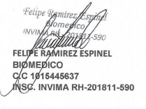

🎯 Objetivos
Garantizar el funcionamiento permanente y seguro del equipamiento existente en la óptica y/o laboratorio por un año, con el fin de que el equipo esté en perfectas condiciones para una atención permanente, diagnóstico y seguimiento de pacientes en el evento de las ópticas. En cuanto a los laboratorios, el objeto del mantenimiento correctivo garantiza la correcta elaboración de los trabajos en pro de los clientes y/o pacientes que utilicen los servicios.
✔Objetivos específicos
- Revisar el equipo en su totalidad tanto su parte interior y exterior enumerando las falencias y/o fallas que puedan presentar en la sesión.
- Corregir mediante mantenimiento correctivo las falencias que presente el equipo.
- Sin perjuicio de los anteriores ítems, se realizará un mantenimiento preventivo con el fin de garantizar la idoneidad del equipo y la longevidad del mismo con el fin de garantizar el funcionamiento a la hora de ser utilizado por el paciente.
- Detallar el estado del equipo, sus características, sus falencias y las labores realizadas (mantenimiento preventivo y/o correctivo) a través de una hoja de vida y protocolo de mantenimiento.
- Diseñar un sistema de mantenimiento preventivo programado con la finalidad de prolongar la vida útil del equipo.
📋 Consideraciones generales
Mantenimiento de equipos: Es el conjunto de actividades desarrolladas con el fin de conservar las propiedades de los equipos en condiciones de funcionamiento seguro, eficiente y económico. Previendo daños o reparando cuando ya se hubiera producido.
Cuando existes un buen mantenimiento, el equipo de servicio o de vida pueden prologarse, siendo un factor económico importante para la óptica y/o laboratorio.
Mantenimiento preventivo: El mantenimiento preventivo consiste en una serie de ajustes, lubricación, limpieza, calibración y análisis periódicos que permiten minimizar el riesgo de fallas y asegurar que el equipo opere en condiciones óptimas durante toda su vida útil.
Beneficios del mantemiento preventivo planificado Entre los beneficios alcanzados al desarrollar un programa de mantenimiento preventivo de equipos biomédicos planificado se cuentan
- Prevención de fallas en los equipos.
- Reducción del reemplazo de equipos fuera de uso útil
- Reducción de la cantidad de repuestos de reserva.
El buen estado de los equipos durante su vida útil.
- Contribuir a que la prestación de servicios de salud cumpla con las características de calidad previstas por la ley
- Suministrar un cronograma de mantenimiento preventivo de equipo biomédicos
Frecuencia del mantenimiento preventivo: Un equipo biomédico en el ámbito de la optometría debe estar sujeto a un programa de inspecciones, mantenimiento o verificación de su funcionamiento. Con esta operación se estaría previniendo fallas en el equipo, mantener el bue un estado del equipo biomédico, para que este pueda seguir operando con normalidad durante su tiempo de vida útil, minimizar el tiempo del equipo fuera de funcionamiento, corregir problemas de operación menores, antes que ellos resulten en fallas mayores del sistema o resultados imprecisos. Cumplir con códigos estándares y regulaciones o las recomendaciones de los fabricantes.
Especificaciones tecnicas (hojas de vida): Se detallará lo siguiente:
- Nombre del equipo
- Modelo
- Fabricante
- Número de serie
- Código del equipo
- Tipo de mantenimiento que recibe, los cuales pueden ser de operación, de diagramas y de listas de partes.
- Requerimientos técnicos del equipo; Voltaje de alimentación, corriente, potencia, características físicas.
- Especificaciones y requerimientos técnicos de componentes o accesorios de distinto fabricante.
- Frecuencia con la cual se debe realizar el manteamiento al equipo y a sus componentes o accesorios.
- Fecha de la puesta en funcionamiento.
- Fechas de las intervenciones realizadas al equipo
- Tipo de trabajo realizado
- Repuestos utilizados
- Nombre de la persona que realizo el trabajo
- La aprobación firmada por la persona que requirió el trabajo.
Procedimiento general de mantenmiento preventivo: Debido a la importancia del mantenimiento preventivo de los equipos biomédicos, se han determinado algunos pasos generales de deben poseer una rutina de manteamiento:
- Inspección de condiciones ambientales del equipo: humedad, vibraciones mecánicas. Polvo, seguridad de la instalación eléctrica.
- Inspección externa e interna del equipo
- Limpieza externa e interna del equipo
- Lubricación y engrase de partes de equipo
- Remplazo de ciertas partes del equipo (en caso de requerirse).
- Ajustes y calibración de partes del equipo
- Inspección de seguridad eléctrica
- Pruebas de funcionamiento
Procedimiento de inspeccion y mantemiento preventivo: Usualmente, los equipos biomédicos que abarca el programa son:
- Consultorio: proyecto foropteres, autoqueratorefractometros, queratometros, estuche de diagnóstico, lampara de hendiduras.
- Óptica: Lesometros, esferómetros, lámparas ultravioletas, Uvometro, Calentado de monturas
- Laboratorios: Biseladoras, ranuradores, Perforadoras, Bloqueadores, trazadores
Mantenimiento correctivo: El mantenimiento correctivo es el trabajo realizado sobre un equipo o parte para restaurar su estado operacional. No es planificado, se lleva a cabo a partir del reporte que hace el usuario, operador del equipo o personal que realiza el mantenimiento programado.
- Pruebas de funcionamiento

Equipo: Lensometrico manual:
- Inspección ocular del equipo biomédico: se revisa la infraestructura externa determinando su estado, composición y estructura para el adecuado funcionamiento.
- Para llegar a la parte interna del equipo, es necesario destaparla con cuidado y retirando los tornillos.
- Revisión de entrada de voltaje desde el cable de poder.
- Se revisa el voltaje de salida del transformador.
- Revisión del rótulo.
- Revisión de los grados.
- Revisión de la palanca que sostiene el portalentes.
- Revisión de portalentes.
- Limpieza de lentes.
- Se limpian y se ajustan los prismas.
- Se ajusta la corona.
- Se ajustan las líneas cruzadas.
- Se ajusta el marcador de tintas.
- Los lentes se limpian con alcohol isopropílico.
- Se revisa el sistema eléctrico.
- Se revisa soque
- Luego del mantenimiento se cierra el equipo y se verifica su perfecto estado.
Reconmendaciones:
- En el evento en que el equipo no encienda, se sugiere la revisión del interruptor y/o la entrada eléctrica..
- Limpiar periódicamente el equipo.
- Cumplir con las fechas de mantenimiento conforme al cronograma.
- Dar el uso adecuado conforme al manual de equipo./li>
 Centro Óptico San Antonio - NIT 40179945-1
Centro Óptico San Antonio - NIT 40179945-1